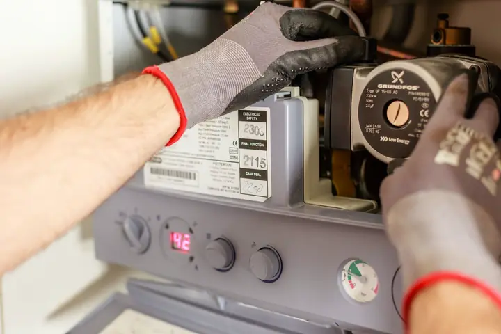
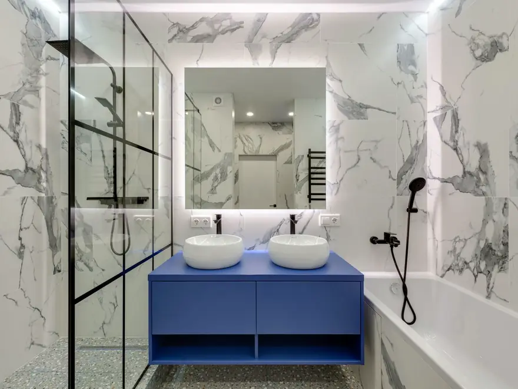
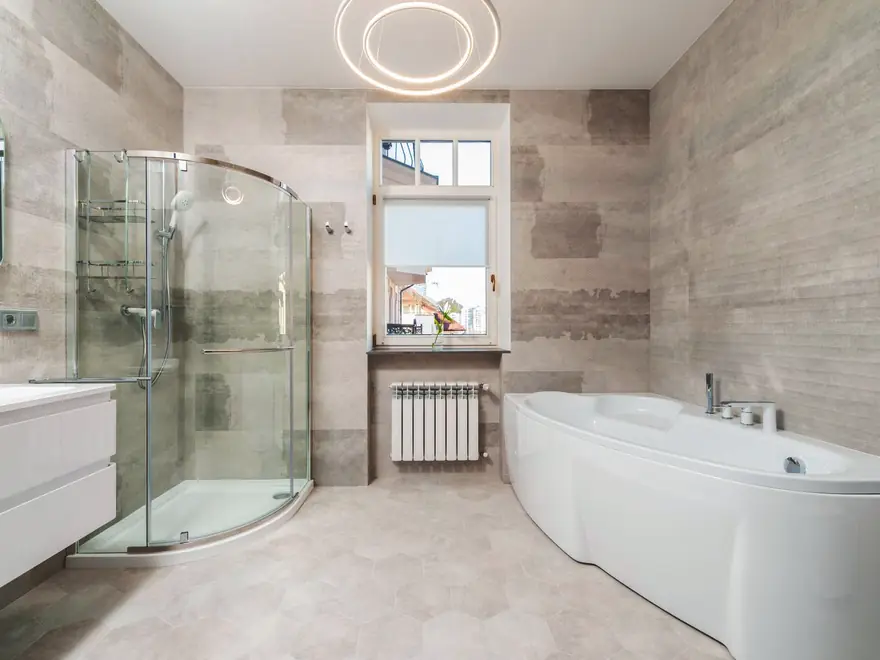

Dépannage et fuites
- Fuite sur tuyau, raccord ou robinet
- Recherche de fuite sans casse inutile
- Chasse d’eau qui coule
- Remise en eau et contrôle final
Lun au sam : 7 h 30 à 19 h
4,8/5 sur Google · 96 avis
Je m’appelle Bastien Corval. Fuite, chauffe-eau en panne, salle de bain à refaire : je me déplace moi-même, je vous annonce le prix avant de commencer et je laisse les lieux propres.


Pourquoi me faire confiance ?
J’ai appris le métier chez un artisan de la Croix-Rousse avant de m’installer à mon compte. Je travaille seul, avec mes outils et mon camion, et c’est moi que vous avez au téléphone.
Une fuite ne prévient pas. Je vous dis tout de suite si je peux venir, à quelle heure, et ce que cela va coûter. Pour les travaux plus longs, comme une salle de bain, vous recevez un devis détaillé et un calendrier qui tient.
Pour les particuliers, les syndics et les commerces, avec un prix clair avant chaque intervention.



Ou vous remplissez le formulaire. Je vous rappelle dans l’heure en journée.
Au téléphone pour un dépannage, par devis écrit pour des travaux.
À l’heure convenue, avec les pièces courantes dans le camion.
Essais devant vous, lieux propres, facture claire.
Douches, vasques et rénovations complètes : un aperçu des derniers chantiers à Lyon et autour.
Un projet ? Devis gratuit



Note moyenne sur 96 avis Google.
Note et avis fictifs, écrits pour la démonstration.Fuite sous l’évier un dimanche soir. Il m’a rappelée tout de suite, est passé le lundi à 8 h et tout était réglé en une heure, au prix annoncé.
Ballon d’eau chaude remplacé dans la journée. Explications claires, ancien ballon emporté, rien à nettoyer derrière lui.
Salle de bain refaite en dix jours comme prévu. Il a coordonné le carreleur et nous a tenus au courant chaque soir.
J’interviens dans tout Lyon et les communes voisines, en urgence ou sur rendez-vous.
Appelez-moi : je vous dis tout de suite si je peux venir dans de bonnes conditions.
06 39 98 52 14Je vous annonce un prix au téléphone dès que vous m’avez décrit le problème, déplacement compris. Si la situation sur place est différente, je vous le dis avant de commencer.
Je suis joignable du lundi au samedi. Pour une fuite importante en dehors de ces horaires, laissez un message : je rappelle dès que possible et je vous explique comment couper l’eau en attendant.
Coupez l’arrivée d’eau générale, en général près du compteur, et l’électricité si l’eau touche une prise ou un appareil. Prenez une photo, elle m’aide à venir avec la bonne pièce.
Oui. Mes chantiers sont couverts par une garantie décennale et une assurance responsabilité civile professionnelle. Les attestations sont envoyées sur simple demande.
Oui. L’entretien annuel comprend le nettoyage, les réglages et les contrôles de sécurité. Vous recevez l’attestation demandée par votre assureur.
Oui. Je m’occupe de la plomberie et je coordonne le carreleur et l’électricien avec qui je travaille d’habitude. Vous gardez un seul interlocuteur.

Décrivez votre besoin en quelques mots. Je vous rappelle rapidement pour vous donner un prix et un créneau.